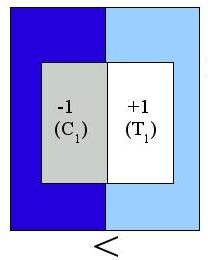
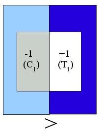

Ranklets share the same
orientation
selectivity pattern as
Haar wavelets.
This is intuitively evident if we remember that a ranklet essentially
counts in how
many of the pairs in
Tx
C the pixel
from the
T set is brighter than the one from
the
C
set. So, for example,
- This ranklet straddles a vertical dark-to-bright edge. Most
pixels in the T
set are
brighter than those in the C
set, which will result in a large count (positive
edge response)

- If the edge is inverted, most pixels in the C set are
brighter
than those in the T set, which
results in a low count
(negative edge response)

- In this case, the edge does not match the orientation tuning of
this ranklet. Pixel brightness is uniformly distributed across the
T and C sets, leading to an average count
(null response)
Thus, this ranklet responds to
vertical structures
in the image. In the
same way, the other two ranklets respond to
horizontal edges
and
diagonal lines
(or corners) respectively.
With an appropriate
normalization,
it is easy to map the
responses to the [-1,+1] range, so that a null response will in fact
correspond to a zero.